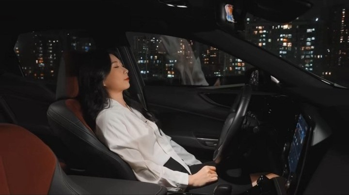
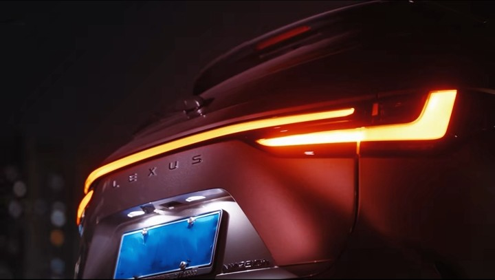

陈佳乐·作品集
宣传片 · TVC · 视听语言 · AI辅助
📹 作品一：宣传片_青岛水务
📝 作品简介
聚焦"水"的属性与人的品格的连接，通过员工采访（工龄20+的老党员与新生代党员）凝聚情感，视觉上配合宏大的航拍与细腻的人物特写，完成了一次关于"责任"与"荣光"的情感共振。
制作工具：Premiere Pro（PR）
作品时长：3:27
📹 作品二：TVC_雷克萨斯
📝 作品简介
将车辆定义为都市精英的"移动精神领地"。捕捉"关门瞬间"的感官切换，提出"舱内时光即治愈"的概念，将车辆重新定义为职场与私人生活之间的缓冲地带。
制作工具：Davinci Resolve（达芬奇）
作品时长：0:45

📹 作品三：宣传片_乔迁之喜_天美数字
📝 作品简介
为了打破传统企业搬迁视频的平淡记录，我采用了"仪式感+人文温度"的创作视角，将一次物理空间的转移转化为团队精神的聚合，向外界传递出企业"辞旧迎新、业绩长虹"的蓬勃生机。
制作工具：Premiere Pro（PR）
作品时长：0:58
🎮 作品四：视听语言分析：游戏CG（艾尔登法环）
📝 作品简介
我掌握精准分析【景别、运镜、转场、镜头角度、镜头类型】等视听语言要素的能力。
制作工具：Davinci Resolve（达芬奇）
作品时长：2:00
✨ 附录：AI——创作的辅助，而非主导
我会使用AI协助生成少数素材——但创作的主导始终是我本人。

✨ 附录：调色静帧展示
我掌握专业的商业视频调色能力，精准把控光影层次与情绪基调，为不同题材的画面赋予高级质感与叙事张力。


✨ 附录：本人制作的视频创作课程
我曾负责公司内部拍剪团队的培训工作，并为之制作课程。